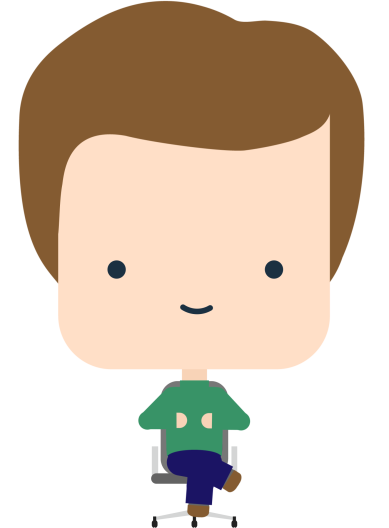
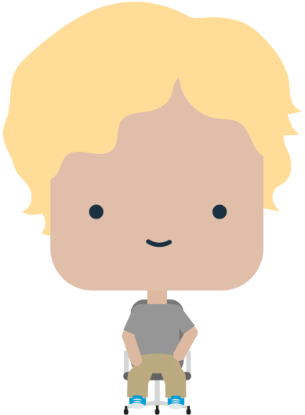
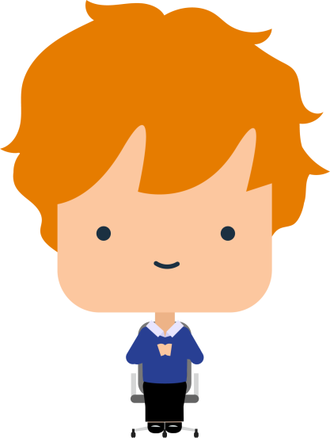
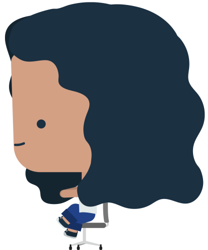

Yang joins a meeting about launching a new product. Jerry wants to move forward but Yang has gathered some data that goes against this decision. She wants to voice her opinion to her team.
To see things from Yang's point of view